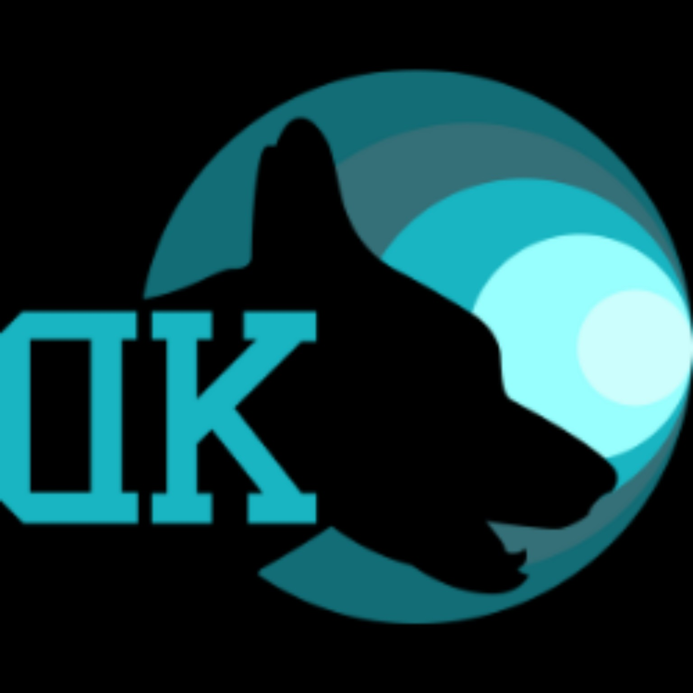

DK Centro Acquatico Cinofilo
Centro · Aqua Trail® disciplina
Aqua Trail® · disciplina
Home
Come funziona
Eventi
Gallery
Binomi
Classifiche
☰
Evento Aqua Trail
Evento
Scheda pubblica dell’evento.
Manca all’inizio dell’evento
00
GIORNI
00
ORE
00
MINUTI
00
SECONDI
Scheda evento
—
Risultati
Gallery
📣 News dell’evento
Aggiornamenti in tempo reale, prima, durante e dopo la gara
LIVE
Vivi l’evento
Aqua Trail
Aggiornato durante la giornata
Ordine di partenza
Consulta dal telefono prima del tuo turno
Binomi iscritti
Solo dati sportivi pubblici
Risultati pubblicati
In attesa dei dati ufficiali
Anteprima Gallery
Tutte le foto